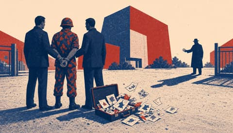
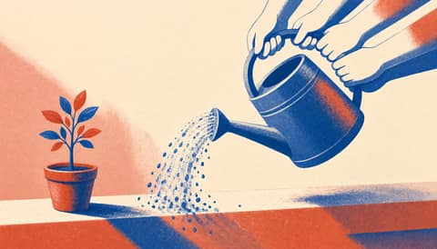
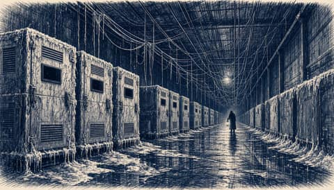

Europae Laeva
One Europe, for the many.
 Guterres urges windfall tax on oil giants, cites $600 million climate fund
Guterres urges windfall tax on oil giants, cites $600 million climate fund Europe guards its ministries and leaves its food to hackers
Europe guards its ministries and leaves its food to hackers Up to 50 leaders join Rutte in Dublin in Garda's biggest operation, say Gardaí
Up to 50 leaders join Rutte in Dublin in Garda's biggest operation, say Gardaí
British police arrest serving US soldier on suspicion of spying for Russia
EU and investors pledge over €10 billion to help European tech firms grow global
The Harbour Ledger
News from the quay up.
 EU sanctions cut Russia trade to 58 billion euros but enforcement lags
EU sanctions cut Russia trade to 58 billion euros but enforcement lags Launch the Black Sea mission while Turla sits in government mail
Launch the Black Sea mission while Turla sits in government mail French cyber agency blames Iran's Revolutionary Guard for shop fridge attack
French cyber agency blames Iran's Revolutionary Guard for shop fridge attack Hackers hit freezers at 700 French supermarkets, Paris blames Iran
Hackers hit freezers at 700 French supermarkets, Paris blames Iran Crowd attacked National Guard base near Kyiv after torture-chamber fakes
Crowd attacked National Guard base near Kyiv after torture-chamber fakes
Attacotti
Scotland's way home runs through Europe.


Europa Surgit
Europe is rising. Keep up.
 Fake bomb threats hit schools across Italy, Scotland and Ireland
Fake bomb threats hit schools across Italy, Scotland and Ireland- Europe's own battlefield AI exists. Our ministries should buy it now.
- One attack hit eight countries. Europe needs one shield, not twenty-seven.
- US soldier arrested in England on suspicion of spying for Russia
- EIB and investors pledge €10bn for European scale-ups
Nuntii Europae
News from a European perspective.
 EU leaders gather in Dublin to debate who speaks for Europe in Ukraine talks
EU leaders gather in Dublin to debate who speaks for Europe in Ukraine talks US Treasury Secretary moves to military base after death threats linked to Iran
US Treasury Secretary moves to military base after death threats linked to Iran Slovak security firm links new email espionage tool to Russian hacking group Turla
Slovak security firm links new email espionage tool to Russian hacking group Turla- US, Ukraine and Russia open first talks since February in Abu Dhabi
 Russia says no agreement for Europe to join Abu Dhabi talks with Ukraine and US
Russia says no agreement for Europe to join Abu Dhabi talks with Ukraine and US
Nuntii Batavi
The Netherlands, between The Hague and Brussels.


Leo Batavus
The Netherlands decides.
 EU auditors say uneven enforcement blunts Russia sanctions
EU auditors say uneven enforcement blunts Russia sanctions French minister Barrot calls Mélenchon a spokesman for the Kremlin
French minister Barrot calls Mélenchon a spokesman for the Kremlin At least 20 dead in two boats off Crete, minister plans EU return hubs
At least 20 dead in two boats off Crete, minister plans EU return hubs Ten JEF countries to sign naval partnership pact on 10 November
Ten JEF countries to sign naval partnership pact on 10 November Hackers use AI in every attack phase, NCTV warns
Hackers use AI in every attack phase, NCTV warns
Europae Dexter
A sovereign Europe, argued plainly.
 Europe must pay for the army Moscow wants bargained away
Europe must pay for the army Moscow wants bargained away Europe has decided to leave Palantir. It has not yet built what comes next.
Europe has decided to leave Palantir. It has not yet built what comes next.- EU leaders to debate single envoy for Ukraine talks as Kushner presses Europe
- US Treasury Secretary Bessent moves to military base over Iranian death threats

France blames Iran's Revolutionary Guard cyber unit for October attack, plans sanctions
Europa Patriarum
A Europe of nations.
 France blames Iran's Revolutionary Guard for cyber attack on 700 retail sites
France blames Iran's Revolutionary Guard for cyber attack on 700 retail sites Portugal rebukes NATO chief Rutte over 'flippant' missile remarks
Portugal rebukes NATO chief Rutte over 'flippant' missile remarks Karasin says no agreement exists for Europeans to join the Abu Dhabi talks
Karasin says no agreement exists for Europeans to join the Abu Dhabi talks At least 20 dead in two boats off Crete as minister plans EU return hub initiative
At least 20 dead in two boats off Crete as minister plans EU return hub initiative Ten northern countries sign naval partnership pact led from Britain's Northwood
Ten northern countries sign naval partnership pact led from Britain's Northwood